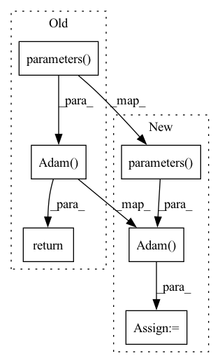

Pattern ID :15638
Before Change
random.seed(self.random_seed)
def configure_optimizers(self):
return torch.optim.Adam(self.parameters() , lr=self.learning_rate)
def _create_windows(self, batch, step):
// Parse common data
window_size = self.input_size + self.hAfter Change
random.seed(self.random_seed)
def configure_optimizers(self):
optimizer = torch.optim.Adam(self.parameters() , lr=self.learning_rate)
scheduler = {
"scheduler": torch.optim.lr_scheduler.StepLR(
optimizer=optimizer, step_size=self.lr_decay_steps, gamma=0.5
),In pattern: SUPERPATTERN
Frequency: 5
Non-data size: 6
Instances Fragment ID: 52975453
Project Name: nixtla/neuralforecast
Commit Name: e3dd1690cb7e6fc84a4cf89bacc0762f209d1b0f
Time: 2022-12-28
Author: cristiani.challu@gmail.com
File Name: neuralforecast/common/_base_windows.py
M Class Name: BaseWindows
N Class Name: BaseWindows
M Method Name: configure_optimizers(1)
N Method Name: configure_optimizers(1)
M Parent Class: pl.LightningModule
N Parent Class: pl.LightningModule
M File Name: neuralforecast/common/_base_windows.py
N File Name: neuralforecast/common/_base_windows.py
M Start Line: 106
M End Line: 106
N Start Line: 134
N End Line: 142
Before Change
for k,v in kwargs.items():
setattr(self,k,v)
if self.type=="Adam":
return torch.optim.Adam(self.classifier.parameters() ,self.learning_rate)
if self.type=="ASGD":
return torch.optim.ASGD(self.classifier.parameters(), self.learning_rate)
if self.type=="RMSprop":
return torch.optim.RMSprop(self.classifier.parameters(), self.learning_rate)After Change
for k,v in kwargs.items():
setattr(self,k,v)
if self.type=="Adam":
self.optimizer= torch.optim.Adam(self.classifier.parameters() ,self.learning_rate)
if self.type=="ASGD":
self.optimizer=torch.optim.ASGD(self.classifier.parameters(), self.learning_rate)
if self.type=="RMSprop":
self.optimizer=torch.optim.RMSprop(self.classifier.parameters(), self.learning_rate) Fragment ID: 52975456
Project Name: radtorch/radtorch
Commit Name: 732971a23863c8c51aa9387d7d92acda00924e26
Time: 2020-04-06
Author: elbanan@users.noreply.github.com
File Name: radtorch/test.py
M Class Name: Optimizer
N Class Name: Optimizer
M Method Name: __init__(1)
N Method Name: __init__(1)
M Parent Class:
N Parent Class:
M File Name: radtorch/test.py
N File Name: radtorch/test.py
M Start Line: 71
M End Line: 77
N Start Line: 71
N End Line: 78
Before Change
def configure_optimizers(self):
lr = self.hparams.learning_rate
return torch.optim.Adam(self.parameters() , lr=lr)
def log_images(self, batch, **kwargs):
log = dict()
x, _ = batchAfter Change
def configure_optimizers(self):
lr = self.hparams.learning_rate
opt = torch.optim.Adam(self.parameters() ,lr=lr, betas=(0.5, 0.9))
sched = torch.optim.lr_scheduler.ExponentialLR(optimizer = opt, gamma = self.args.lr_decay_rate)
return [opt], [sched]
def log_images(self, batch, **kwargs): Fragment ID: 52975458
Project Name: tgisaturday/dalle-lightning
Commit Name: e75506c00b56b972bb1aca3969c2fd96f66b4e6a
Time: 2021-07-14
Author: jamesk1228@gmail.com
File Name: pl_dalle/models/vqvae2.py
M Class Name: VQVAE2
N Class Name: VQVAE2
M Method Name: configure_optimizers(1)
N Method Name: configure_optimizers(1)
M Parent Class: pl.LightningModule
N Parent Class: pl.LightningModule
M File Name: pl_dalle/models/vqvae2.py
N File Name: pl_dalle/models/vqvae2.py
M Start Line: 150
M End Line: 150
N Start Line: 150
N End Line: 152
Before Change
if isinstance(self.optimizer, (tuple, list)):
return self.optimizer[0](self.parameters(), **self.optimizer[1])
elif self.optimizer == "adam":
return torch.optim.Adam(self.parameters() , lr=0.001)
elif self.optimizer == "sgd":
return torch.optim.SGD(self.parameters(), lr=0.01, weight_decay=5e-4)
elif isinstance(self.optimizer, (torch.optim.Adam, torch.optim.SGD)):
return self.optimizerAfter Change
)
d["scheduler"] = scheduler
elif self.optimizer == "adam":
opt = torch.optim.Adam(self.parameters() , lr=0.001)
elif self.optimizer == "sgd":
opt = torch.optim.SGD(self.parameters(), lr=0.01, weight_decay=5e-4)
elif isinstance(self.optimizer, (torch.optim.Adam, torch.optim.SGD)):
opt = self.optimizer Fragment ID: 52975459
Project Name: zj-zhang/amber
Commit Name: eb350f428561bccc7c9548f367ee9d92afeff87e
Time: 2022-11-23
Author: zj.z@ucla.edu
File Name: amber/modeler/base.py
M Class Name: BaseTorchModel
N Class Name: BaseTorchModel
M Method Name: configure_optimizers(1)
N Method Name: configure_optimizers(1)
M Parent Class: LightningModule
N Parent Class: LightningModule
M File Name: amber/modeler/base.py
N File Name: amber/modeler/base.py
M Start Line: 145
M End Line: 153
N Start Line: 144
N End Line: 168
Before Change
random.seed(self.random_seed)
def configure_optimizers(self):
return torch.optim.Adam(self.parameters() , lr=self.learning_rate)
def _normalization(self, batch, val_size=0, test_size=0):
temporal = batch["temporal"] // B, C, TAfter Change
random.seed(self.random_seed)
def configure_optimizers(self):
optimizer = torch.optim.Adam(self.parameters() , lr=self.learning_rate)
scheduler = {
"scheduler": torch.optim.lr_scheduler.StepLR(
optimizer=optimizer, step_size=self.lr_decay_steps, gamma=0.5
), Fragment ID: 52975462
Project Name: nixtla/neuralforecast
Commit Name: e3dd1690cb7e6fc84a4cf89bacc0762f209d1b0f
Time: 2022-12-28
Author: cristiani.challu@gmail.com
File Name: neuralforecast/common/_base_recurrent.py
M Class Name: BaseRecurrent
N Class Name: BaseRecurrent
M Method Name: configure_optimizers(1)
N Method Name: configure_optimizers(1)
M Parent Class: pl.LightningModule
N Parent Class: pl.LightningModule
M File Name: neuralforecast/common/_base_recurrent.py
N File Name: neuralforecast/common/_base_recurrent.py
M Start Line: 99
M End Line: 99
N Start Line: 124
N End Line: 132